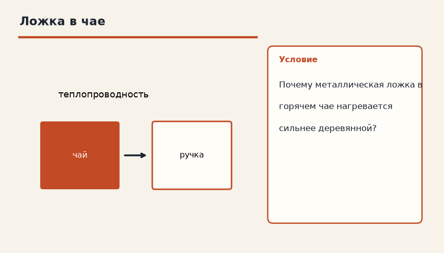

Тема «Теплопроводность»: физический смысл, единицы величин, типичные ошибки и два разобранных примера.

Схема к условию.
Физический смысл
Передача энергии от более нагретых частей тела к менее нагретым за счет движения молекул (без переноса вещества).
Теплопроводность переносит энергию от горячего участка к холодному через само вещество, без потоков и без переезда кусков материала. Молекулы в горячем месте колеблются сильнее и расталкивают соседей. Так нагревается металлическая ложка, оставленная в чае.
У разных материалов способность разная. Металл проводит хорошо, дерево плохо — поэтому деревянная ложка в том же чае почти не обжигает руку. Вакуум теплопроводностью не греет: передавать удары некому, для вакуума остаётся излучение.
Чайник на плите получает жар от огня к корпусу прежде всего теплопроводностью через дно. Дальше вода внутри уже может перемешиваться, но путь «огонь → металл дна» — проводимость.
Формула и единицы
Перенос энергии без переноса вещества, от горячего к холодному, за счёт движения молекул.
Пояснение
Металлическая ложка в горячем чае нагревается. А деревянная — нет (у нее теплопроводность плохая).
Металлическая ложка в горячем чае нагревается. Деревянная почти нет: у дерева теплопроводность плохая.
Типичные ошибки
Не называй теплопроводностью подъём тёплого воздуха. Это уже конвекция. Проводимость идёт и в твёрдом теле, где потоков нет.
Схему к задаче нарисуйте сами. Решение открывается отдельно.
Разбор 1
Ложка
Почему металлическая ложка в горячем чае нагревается быстрее деревянной палочки?
Сначала данные, затем перевод в СИ, если он нужен, потом ход и ответ.
Дано. оба предмета в одном чае
В СИ. Перевод не нужен: все величины уже заданы в СИ.
Найти. причина
Решение.
У металла выше теплопроводность.
Энергия передаётся по ложке без переноса вещества.
Теплопроводность металла выше.
Схема для сверки. Её рисуют до того, как открывают решение.
Разбор 2
Направление
От какого тела к какому идёт энергия при теплопроводности?
Сначала данные, затем перевод в СИ, если он нужен, потом ход и ответ.
Дано. два тела разной температуры соприкасаются
В СИ. Перевод не нужен: все величины уже заданы в СИ.
Найти. направление
Решение.
Энергия идёт от более нагретого к менее нагретому.
От горячего к холодному.
Схема для сверки. Её рисуют до того, как открывают решение.
Разбор 3
Термос
Зачем между стенками термоса откачивают воздух?
Сначала данные, затем перевод в СИ, если он нужен, потом ход и ответ.
Дано. прослойка разрежена
В СИ. Перевод не нужен: все величины уже заданы в СИ.
Найти. цель
Решение.
Почти нет частиц, которые передавали бы энергию столкновениями.
Теплопроводность через зазор слабая.
Чтобы ослабить теплопроводность.
Схема для сверки. Её рисуют до того, как открывают решение.
Разбор 4
Не конвекция
Можно ли объяснить нагрев сплошной железной ложки потоком металла внутри неё?
Сначала данные, затем перевод в СИ, если он нужен, потом ход и ответ.
Дано. ложка твёрдая
В СИ. Перевод не нужен: все величины уже заданы в СИ.
Найти. способ переноса
Решение.
В твёрдом теле вещество не течёт.
Это теплопроводность.
Нет, это теплопроводность.
Схема для сверки. Её рисуют до того, как открывают решение.
Разбор 5
Дно
Каким способом тепло пламени доходит до воды через металлическое дно чайника?
Сначала данные, затем перевод в СИ, если он нужен, потом ход и ответ.
Дано. дно сплошное, металлическое
В СИ. Перевод не нужен: все величины уже заданы в СИ.
Найти. способ
Решение.
Через твёрдый металл — теплопроводностью.
Теплопроводностью.
Схема для сверки. Её рисуют до того, как открывают решение.
Разбор 6
Рука и кирпич
Почему медный прут, вынутый из кипятка, обжигает сильнее, чем кирпич той же температуры, если взяться на секунду?
Сначала данные, затем перевод в СИ, если он нужен, потом ход и ответ.
Дано. одинаковая температура, разный материал
В СИ. Перевод не нужен: все величины уже заданы в СИ.
Найти. причина
Решение.
Медь быстрее подводит тепло к руке.
У неё выше теплопроводность.
У меди выше теплопроводность.
Схема для сверки. Её рисуют до того, как открывают решение.
Разбор 7
Вакуум и излучение
Если в термосе откачали воздух, значит ли это, что тепло между стенками не передаётся никак?
Сначала данные, затем перевод в СИ, если он нужен, потом ход и ответ.
Дано. между стенками вакуум
В СИ. Перевод не нужен: все величины уже заданы в СИ.
Найти. уточнение
Решение.
Теплопроводность почти исчезла.
Излучение через вакуум остаётся.
Нет: остаётся излучение.
Схема для сверки. Её рисуют до того, как открывают решение.